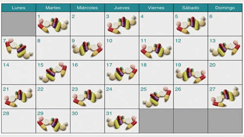

Real Chubut - Agencia de Noticias


Remedios, día por medio

En la era Macri los remedios aumentaron un 235% promedio mientras las jubilaciones subieron apenas 144%. Solo en diciembre, los 50 principales remedios treparon 8,6%.
Los adultos mayores tuvieron un alza en sus ingresos desde mayo de 2015 a diciembre último, a través de la movilidad jubilatoria –la cual fue modificada por Cambiemos a fines de 2017– del 143,6 por ciento. Pero ese aumento estuvo lejos del 269,3 por ciento en que se encareció la canasta básica y del 235,0 por ciento de incremento promedio en medicamentos. Estos últimos son una parte esencial y creciente en la canasta de esos hogares. Los jubilados requieren una verdadera reparación tras tres años de destrucción histórica de su poder de compra.
Según un informe realizado por el Centro de Economía Política Argentina, junto con el Centro de Estudios Políticos para Personas Mayores y la Asociación Latinoamericana de Gerontología Comunitaria, la mayoría de más de 60 años consume en promedio de cuatro a ocho medicamentos. Algunos, habituales, pueden llegar a costar más de 1800 pesos.
El impacto de la escalada de precios de los remedios en este universo es subestimado al calcular la cifra de pobreza. Según el informe, cubrir alimentos y servicios para un adulto mayor ronda los 26.0433 pesos, mientras que más de 60 por ciento de jubiladas y pensionadas perciben la mínima de 9309 pesos.
El último informe del Indec, con cifras del primer semestre de 2018, dio cuenta de 7.581.118 personas pobres y 1.357.923 indigentes. Del total, el 3,6 por ciento (272.920) son adultos de más de 65 años que cayeron por debajo de la línea de pobreza y 2,2 por ciento (29.874) que se convirtieron en indigentes.
De acuerdo con el último informe realizado por la Fundación Centro de Estudios Políticos, Económicos y Sociales (Cepes), para una muestra en Mar del Plata, una familia de dos jubilados con cien por ciento de cobertura en sus gastos de Salud se ubicó entre 18.500 y 20.500 pesos para no ser considerada pobre en noviembre. Pero son cada vez más los que quedan fuera de una cobertura integral de medicamentos, a partir de los mayores requisitos del PAMI.
“En el caso de los alimentos básicos necesarios para una correcta canasta nutricional se verifica que la inflación (2015-2018) llegó a más del 269,3 por ciento, habiendo productos, como el aceite de girasol, que aumentaron un 464,7 por ciento, la lechuga (313,6 por ciento) o la carne picada (328,8 por ciento). Los aumentos de medicamentos y alimentos superan así ampliamente el aumento del haber jubilatorio lo que produce una caída abrupta de las personas mayores en la pobreza”, señala el CEPA.
De acuerdo con datos relevados por la Defensoría de la Tercera Edad de la Ciudad de Buenos Aires para diciembre último, de los 6.852.090 beneficiarios del sistema integrado previsional, 64% (4.417.507) percibe la jubilación mínima. Las proyecciones para el cierre de año pasado equivalente a un 43 por ciento de varones y 57 por ciento a mujeres.
Deterioro
“Tras tres años transcurridos de la gestión del actual gobierno resulta cada vez más evidente la situación de retroceso y el proceso de deterioro de las condiciones de vida de las personas mayores de nuestro país, quienes día a día ven disminuir el poder adquisitivo de sus jubilaciones, lo que afecta notablemente su capacidad de compra de bienes de consumo básicos”, sentencia el informe.
El impacto de la escalada inflacionaria se profundiza por la alta dependencia a los medicamentos para este grupo etario. Hay casos en que se buscan alternativas genéricas e incluso se suprimen directamente algunos de los medicamentos recetados. Pero tampoco alcanza, además de atentar contra “la supervivencia (de los mayores) y para mantener o recomponer la salud”. “La imposibilidad del acceso a los medicamentos no sólo aumenta la mortalidad, sino que además aumenta la morbilidad de patologías que generan dependencia y discapacidad”, dice el documento.
Precios
Mientras el PAMI recorta sus prestaciones y disminuye la cobertura de medicamentos, se registra una tendencia preocupante de incremento sostenido de los precios de venta de los mismos, que se profundizó en los últimos meses pese a la supuesta pax cambiaria desde agosto. “En promedio los precios de los 50 principales medicamentos aumentaron 8,6 por ciento sólo en diciembre, mientras que el promedio de los diez que más aumentaron en el mismo período alcanza el 14,8 por ciento, entre los que cabe destacar aumentos de hasta un 21,3 por ciento”, según los registros de PAMI y Kairos Argentina.
Si se toma en cuenta por patología, para enfermedades cardiovasculares se registra aumentos de 534,4 por ciento en tres años en el Acenocumaro (anticoagulante para evitar ACV). El Atenolol, un bebloqueante para hipertensos, se encareció 500,9 por ciento, y la Furosemida (diurético para insuficiencia cardíaca) aumentó 313,3 por ciento. Por enfermedades respiratorias, el fluticasona más salmeterol (para asmáticos) tuvo un alza de 302,1 por ciento, valiendo actualmente 1805 pesos. “El EPOC representan el 13 por ciento de las defunciones por enfermedades respiratorias”, destaca el documento. Entre los medicamentos para patologías osteoarticulares, el Etoricoxib (antiinflamatorio para dolores crónicos) exhibió un aumento de 284,9 por ciento y el ácido ibandrónico (tratamiento de osteoporosis en mujeres) sufrió un incremento de 246 por ciento. La dorzolamida (para hipertensión ocular y glaucoma) se encareció 270,3 por ciento y la Levotiroxina (para hipertiroidismo), 478,2.
En el caso del omeprazol, un fármaco utilizado en el tratamiento de úlcera de estómago o duodeno, gastritis y reflujo gastroesofágico, la suba fue de 179,7 por ciento. Este es un medicamento que suele utilizarse para acompañar otros con el objetivo de evitar el daño que pueda provocar en el sistema gástrico. La dutasteride (para la hiperplasia benigna de próstata que disminuye el riesgo de retención aguda de orina) el salto fue de 343,8 por ciento; el citalopram (antidepresivo) aumentó 195,7 por ciento durante este gobierno.
“Al quitar la entrega gratuita de medicamentos se puso en grave riesgo la salud de las personas mayores y la calidad de vida de aquellas con patologías crónicas, que, sin tratamiento oportuno, generan discapacidades y aumentan la fragilidad y dependencia de los mayores”, concluye.
Fuente: Pagina 12